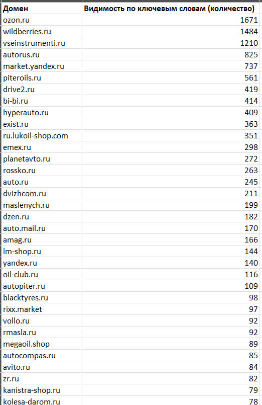
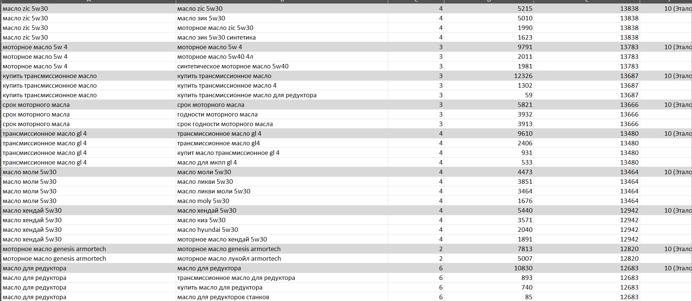
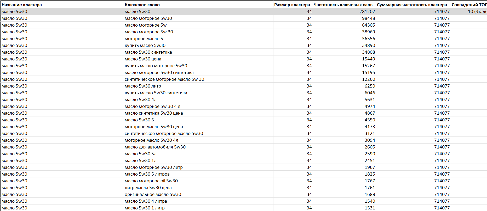
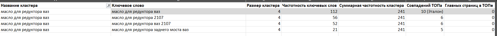
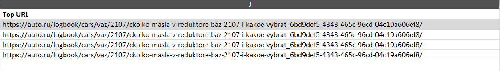
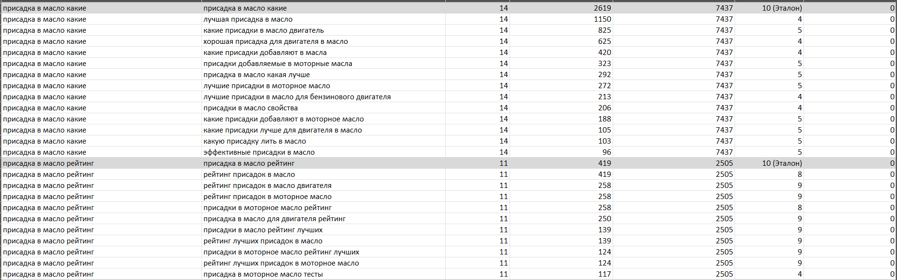
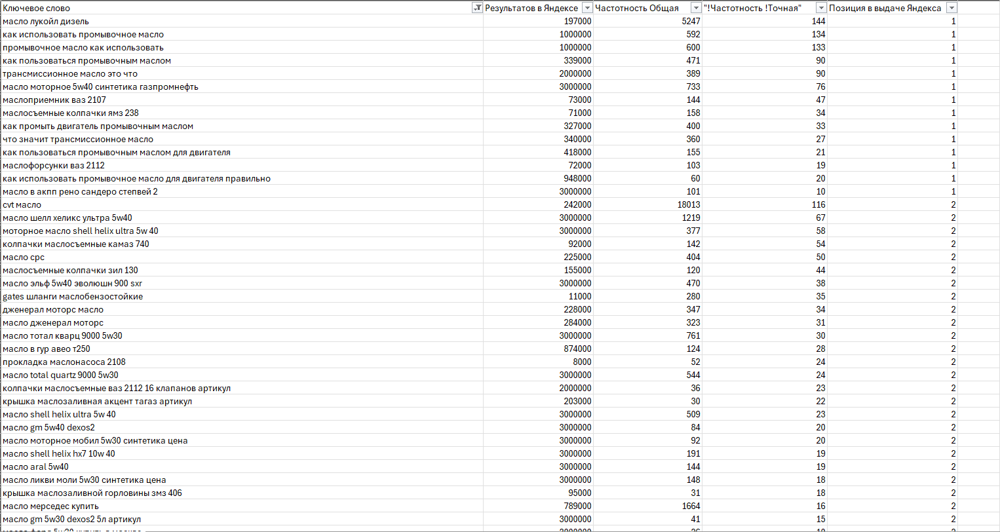
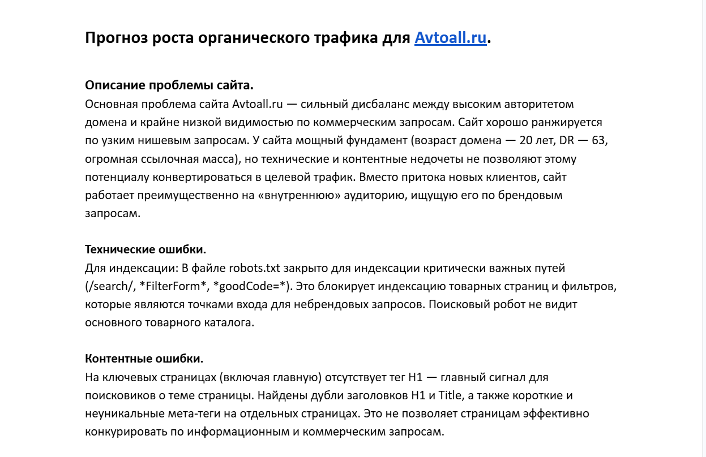

Разработка семантического ядра для интернет-магазина автозапчастей Avtoall.ru
Задача: Собрать, структурировать и проанализировать поисковые запросы для дальнейшего построения структуры сайта, контент-плана и стратегии продвижения в высококонкурентной нише.
Инструмент: Маркерные запросы из анализа конкурентов, сбор ключевых слов в Яндекс Wordstat, определение частотности и кластеризация в Rush-Analytics.
1. Исходные данные и конкуренты
Прежде чем углубляться в слова, важно понять, с кем нам предстоит конкурировать. На этапе сбора семантики мы уже получили данные о видимости основных игроков рынка.

Что мы видим: В выдаче доминируют маркетплейсы и крупные сетевые магазины: Wildberries, Ozon, Exist, Autodoc. Их видимость исчисляется тысячами запросов. Прямая конкуренция с ними по общим, высокочастотным запросам (например, «купить масло 5w30») потребовала бы бюджетов, несопоставимых с масштабом нашего сайта.
Вывод: Нам нужна оборонительная стратегия. Вместо лобовой атаки мы найдем и укрепимся в тех нишах, где маркетплейсы слабы — в узкоспециализированных, «экспертных» запросах.
2. Кластеризация:
Было собрано и обработано несколько десятков тысяч ключевых слов. С помощью кластеризации мы сгруппировали их по смыслу — по так называемому «интенту» пользователя.

Каждая строка в этой таблице — это поисковый запрос, а столбцы содержат критически важные для анализа данные:
- Название кластера: Тематическая группа (например, «масло 5w30»).
- Ключевое слово: Сам запрос.
- Частотность: Сколько раз в месяц его ищут.
- Совпадений ТОПа: Насколько запрос тематически близок к ядру кластера (чем выше число, тем увереннее мы можем использовать его на одной странице).
3. Анализ ключевых кластеров
Мы рассмотрим три разных кластера, чтобы показать, как анализ семантики влияет на стратегию.
Кейс 1. Высококонкурентный коммерческий кластер: «Масло 5w30»

Что мы видим:
- Размер кластера: 34 запроса. Это очень популярная тема.
- Тип запросов: Преобладают слова «купить», «цена», «синтетика», «4л», «5л». Интент — коммерческий, человек хочет выбрать и купить товар.
- Конкуренты: Top URL кластера — wildberries.ru и amag.ru. Это монстры рынка.
Стратегия: Пытаться вытеснить Wildberries по этому кластеру — гиблое дело. Мы используем его иначе:
- Создадим качественную страницу категории «Масла 5w30», удобную для пользователя.
- Наполним ее товарами с фильтрами по объему и типу, как того требуют запросы.
- Эта страница будет выполнять роль «воронки», принимая на себя трафик и распределяя его по более узким, нишевым позициям.
Кейс 2. Перспективная ниша: «Масло для редуктора ВАЗ»


Что мы видим:
- Специфика: Запросы очень конкретные: «масло для редуктора ваз 2107», «масло для заднего моста».
- Конкуренты: Top URL здесь — auto.ru (блог/статья), а не магазин. Это сигнал! Поисковик не находит качественной коммерческой страницы по этой теме и показывает информационную.
Стратегия: Это наша целевая ниша.
- Создаем страницу, посвященную маслам для редукторов всех моделей ВАЗ.
- Собираем все подходящие масла, делаем удобную таблицу совместимости, добавляем экспертные статьи по замене.
- Поисковая система, видя такую глубину проработки, с большой вероятностью предпочтет наш коммерческий, но экспертный сайт простой статье на auto.ru.
Кейс 3. Информационный кластер: «Присадки в масло — какие выбрать?»

Что мы видим:
- Интент: Пользователь еще не готов покупать, он ищет информацию, сравнивает, читает отзывы.
Стратегия: Такие запросы идеально подходят для контент-маркетинга.
- Создаем раздел «Блог» или «Советы».
- Пишем экспертную статью-рейтинг: «Топ-10 лучших присадок в масло: отзывы, цены, как выбрать».
- Внутри статьи ставим ссылки на соответствующие карточки товаров в каталоге.
Так мы приводим пользователя на раннем этапе, формируем его лояльность и доверие («экспертность»), и мягко подводим к покупке.
4. Анализ реальных запросов сайта Avtoall.ru
Любой анализ был бы неполным без взгляда на то, что уже работает. Мы выгрузили запросы, по которым Avtoall.ru уже имеет видимость в поиске.

Что мы видим: Сайт уже ранжируется по тысячам узких, экспертных запросов: «маслосъемные колпачки ямз 238», «маслофорсунки ваз 2112», «прокладка маслонасоса 2108». Это не случайные слова. Это портрет аудитории сайта — опытные автовладельцы и профессионалы, которые занимаются ремонтом, а не просто заменой масла.
Ключевой инсайт: Это и есть наше главное конкурентное преимущество. Маркетплейсы не смогут победить нас в этих микро-нишах, потому что их ассортимент и контент там слишком поверхностны.
5. От слов к цифрам: прогноз трафика
Мало собрать слова. Важно понимать, какую прибыль они принесут. На основе выделенных кластеров и частотности запросов был составлен прогноз трафика.

Выводы из прогноза:
- Фокусировка на низкоконкурентных нишах (маслосъемные колпачки, масла для конкретных двигателей, трансмиссионные масла для ВАЗ) позволит увеличить целевой трафик на 30-50% в течение полугода.
- Информационный блог на основе кластеров-вопросов обеспечит стабильный прирост посетителей на ранних стадиях цикла покупки.
- Основной прирост продаж будет идти не от «лобовых» ВЧ-запросов, а от глубокого проникновения в те ниши, где наш авторитет уже высок или может быть быстро построен.
Полный текст прогноза доступен по ссылке: [ССЫЛКА НА ДОКУМЕНТ GOOGLE DOCS]
Файл с собранным и кластеризованным семантическим ядром, для категории "Автомасла", доступен по ссылке: Google Таблица — Семантическое ядро Avtoall.ru
6. Итоги и ценность проделанной работы
- Готовая структура сайта: Мы получили четкое понимание, какие категории и подкатегории нужно создать (на основе крупных кластеров) и как организовать фильтры (на основе подсветок).
- Контент-план: Информационные кластеры превратились в список тем для блога, которые будут привлекать «теплую» аудиторию.
- Приоритизация: Мы разделили семантику на две группы: точки роста (низкоконкурентные ниши для фокуса) и фоновые запросы, по которым достаточно просто быть „в рынке“, не вкладываясь в агрессивное продвижение.
- Измеримый результат: Прогноз трафика дает бизнесу понимание окупаемости SEO-работ и ставит конкретные KPI.
Главный вывод: Семантическое ядро — это не просто список слов. Это стратегический документ, который определяет развитие всего сайта. В условиях жесткой конкуренции выигрывает не тот, у кого больше бюджет, а тот, кто лучше понимает своего пользователя. Именно это понимание мы и заложили в основу продвижения Avtoall.ru.